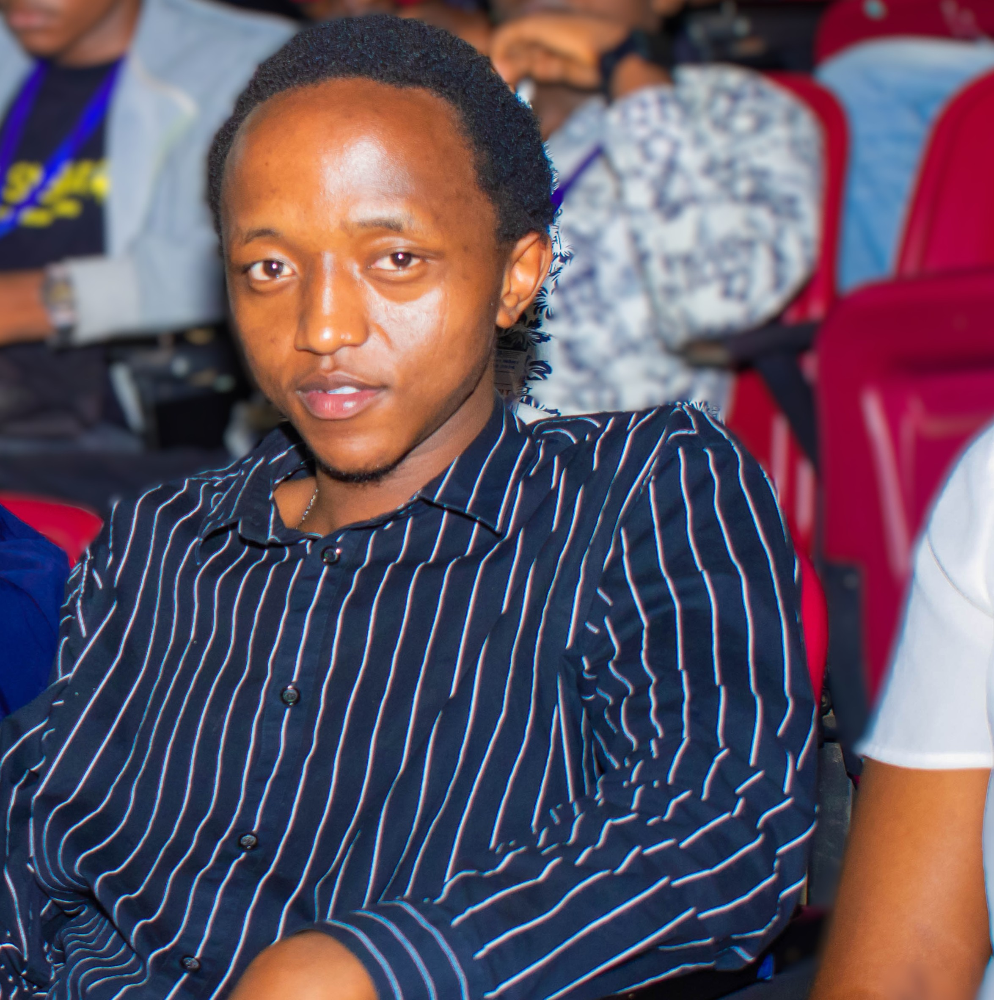

Registration Number: IN16/00015/24
📄 Download CV
Hi, I’m Erick Mwangi, Founder and Technical Lead of TerraSept Labs Technologies and a Bachelor of Science in Software Engineering student at Kisii University. I specialize in building innovative, scalable, and data-driven software solutions that solve real-world problems.
With a strong foundation in programming, full-stack development, and artificial intelligence, I merge technical expertise with quantitative analysis to design intelligent systems. I’m passionate about leveraging AI, machine learning, and analytics to create solutions that are not only functional but impactful.
Beyond coding, I thrive on building teams, driving projects from concept to launch, and exploring creative approaches that enhance user experience. I actively engage with technical communities, contribute to innovative projects, and apply data-driven insights to optimize solutions.
My goal is to grow as a visionary software engineer and tech entrepreneur, delivering software systems that combine creativity, analytics, and innovation to make a meaningful difference in the tech industry and society at large.